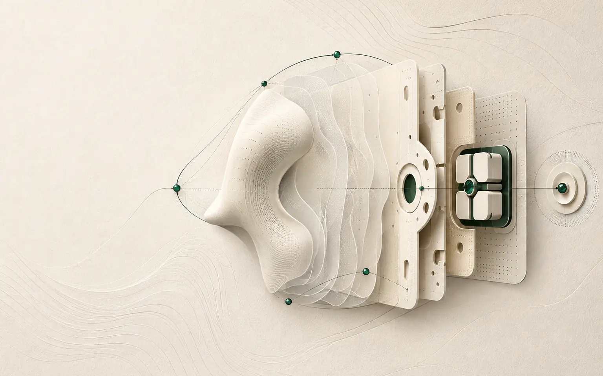

Platform · Two distinct pathways
Research and consumer commercialisation—kept deliberately distinct.
UHN/KITE continues to investigate clinical questions. WinVerse™ is authorised to translate the underlying technology into a safe, usable and manufacturable consumer wellbeing product, with separate evidence, claims and product validation.
Research pathwayClinical studies continue independently at UHN/KITE
Consumer pathwayProductisation and B2C commercialisation led by WinVerse™
Claim boundaryNo medical benefit claimed without product-specific evidence

First consumer programme
SerotoniX™
A consumer wellbeing experience built around consistent fit, controlled sessions and a clearly defined non-medical use.